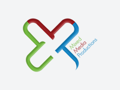

OELP

ओ.ई.एल.पी के बारे में
ओईएलपी 2008 से वंचित वर्ग के नन्हें बच्चों में सीखने की बुनियादी दक्षताओ को विकसित करने में जुटी हुई है। 2016 में राजस्थान सरकार ने ओईएलपी की रिसोर्स किट का वितरण राज्य के सात जिलों के सभी सरकारी विद्यालयों में किया। 2018 में राजस्थान सरकार, द हंस फाउंडेशन और ओईएलपी के बीच त्रि-पक्षीय एमओयू पर हस्ताक्षर हुआ और ओईएलपी को किट के सही क्रियान्वयन में सहयोग करने की जिम्मेदारी दी गई। इस कार्य का वित्तिय सहयोग द हंस फाउडेशन द्वारा किया जा रहा है। फिल्मस् को मिक्सड् मीडिया प्रोडक्शन, नई दिल्ली द्वारा बनायी जा रही है और आई टी का सहयोग माहिती इन्फोटेक प्राईवेट लिमिटेड, बंगलुरू द्वारा किया जा रहा है।.